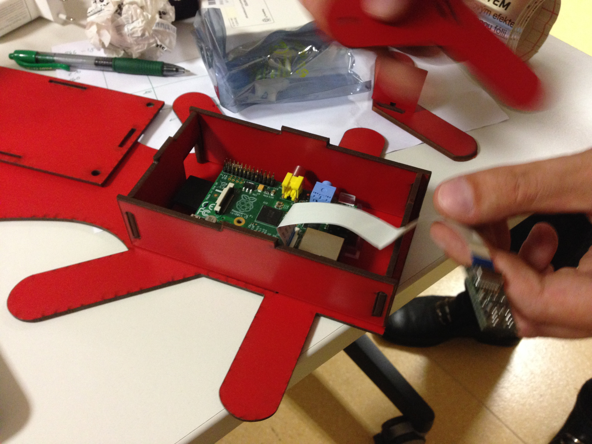
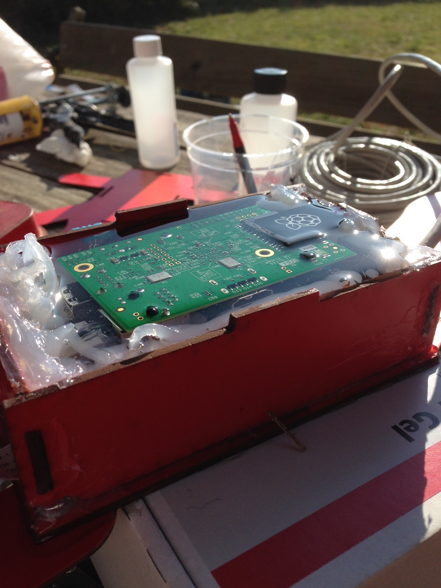

Losing the interface is
losing the feedback
Culture
- we believe in collective intelligence
- we build simple
- we think big
- we do open source
- we do beautifully
We fix the interface of public services
-
Alexandre Vallette data-scientist machine-learning GIS graphs computer vision
-
David Bruant front-end javascript standards teaching datavisualization
-
David Schwandt High Performance Computing open hardware
statistical physics -
Romain Crestey Design UX drawer engineer creative geek


6element
Waste: 1 ton / person / year
see this ?
↲
each month
recycling works
Recycling centers

Problems:
- we don't sort well
- we don't reuse
Objectives:
- predict demand
- provide an application
- connect to reusers
1) Predicting demand
2) Providing an app
3) Crowdsourcing
Finally some precise data about waste production and reuse.
4) Designing a sensor
The sensor should:
- measure affluence
- measure the level of each containers
- low cost
- improvable
Laser cutter casing

Outdoor protection

Ant in the sky

Counting the number of cars

The level of each container

→